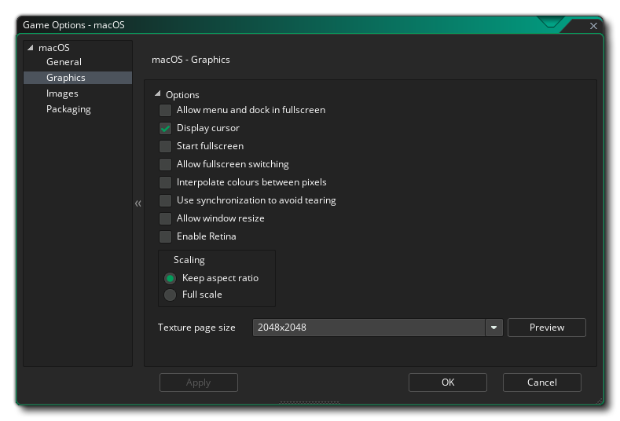

Esta sección describe las diferentes opciones disponibles para usted que controlan cómo se compilarán sus proyectos de juegos Mac OS. Las diferentes secciones son:
En la sección Información del producto, lo primero que debe hacer es completar el Nombre para mostrar de su juego y luego completar el Número de versión, la ID de la aplicación, el archivo de salida de la aplicación y los detalles de derechos de autor. La salida de la aplicación es la ubicación a la que van tus archivos de instalación del juego en tu máquina de desarrollo Mac. Cuando creas tu .app.zip, ese archivo puede ir a cualquier parte (la ubicación que especifique al hacer el diálogo de guardar no es la única copia hecha de eso) .app.zip ), pero el .pkg y otros archivos se dejan en esta carpeta, lo que le permite probar las instalaciones locales a través de Terminal de manera que simule la compra de Mac Store, etc.
Aquí también debe proporcionar el Identificador de equipo que desea utilizar para firmar la aplicación final que GameMaker Studio 2 crea para usted. Si lo configura aquí, superará la ID del equipo que haya proporcionado en las Preferencias de macOS. Después del identificador del equipo, también tiene la opción de proporcionar el identificador de firma, que Apple requiere para todas las aplicaciones que no son de la tienda de aplicaciones (como los juegos Steam, por ejemplo).
La última opción es habilitar Steam en tu juego. Si habilitas esta opción, asegúrate de tener el SDK de Steam works instalado (ver aquí ), y de haber agregado la ID de la aplicación Steam en las Opciones generales para el juego.

Las opciones de gráficos son aquellas que debe configurar para determinar cómo usará su juego la tarjeta gráfica de su Mac objetivo. Se incluyen las siguientes opciones para que las modifique:
- Permitir menú y acoplamiento en pantalla completa: cuando está marcada, esta opción mostrará el menú del sistema operativo y la base si el juego está en modo de pantalla completa. Esto está desactivada por defecto.
- Mostrar Cursor: cuando se marca esta opción, se mostrará el cursor normal de Mac OS, y si lo desactivas, significa que no se muestra ningún cursor a menos que hayas creado uno en tu código de juego. Esto está desactivada por defecto.
- Iniciar pantalla completa: si esta opción está activada, el juego comenzará en modo de pantalla completa; de lo contrario, se abrirá la ventana. Esto está desactivada por defecto.
- Permitir el cambio de pantalla completa: con esta opción marcada, el usuario puede cambiar de pantalla completa a la ventana y viceversa utilizando los accesos directos estándar de Mac OS. Esto está desactivada por defecto.
- Interpolar colores entre píxeles: activa la interpolación, que básicamente "suaviza" los píxeles. Para gráficos de píxeles nítidos, debería estar desactivado, pero si tiene buenas combinaciones alfa y gráficos de bordes suavizados, es mejor dejarlo encendido. Esto está desactivado de manera predeterminada.
- Use la sincronización para evitar que se rasgue: Esto activa y desactiva v-sync (v-sync se usa para sincronizar la velocidad de actualización de su juego con la frecuencia de actualización del monitor). Tenga en cuenta que si tiene un juego con una velocidad de sala de 120 y el jugador tiene un monitor con una frecuencia de actualización de 60, activar esta opción también bloqueará la velocidad de su juego a 60. Esto está desactivada por defecto.
- Permitir el cambio de tamaño de la ventana: Marcar esto permite al usuario cambiar el tamaño de la ventana del juego (la opción de la ventana sin bordes debe estar desactivada para que esto funcione). Esta opción está apagada por defecto.
- Habilitar Retina: Al marcar esto, el búfer trasero estará en la resolución más alta (real) cuando el juego se ejecute en un monitor habilitado por retina, mientras que al desmarcarlo, el búfer posterior estará en la resolución aparente (más baja). Lo que esto significa es que la ventana inicial del juego se configurará al doble del ancho y la altura que el puerto de la sala / vista donde se configura la primera sala. Sin embargo, esto NO ajusta la superficie de la aplicación a la medida, por lo que si desea que su juego aproveche al máximo la pantalla retina, también debe configurar la superficie de la aplicación para que sea igual al tamaño de la ventana (tenga en cuenta que esto duplicará los píxeles) a lo largo del ancho y la altura, así que solo habilite esto y escale la superficie de la aplicación si su juego se beneficiará de la mayor resolución). Esta opción está apagada por defecto.
- Escalado: aquí puede elegir mantener la relación de aspecto (por lo tanto, una habitación de 4: 3 se "encajonará" en una 16: 9) o escalar completamente (estirando la imagen para que se ajuste a la pantalla completa).
¡ADVERTENCIA! Apagar la superficie de la aplicación deshabilitará todas las opciones de escalado establecidas en las Opciones de juego de Mac hasta que se vuelva a encender. Ver la superficie de aplicación para más detalles.Finalmente, existe la opción de establecer el tamaño de la página de textura. El tamaño predeterminado (y el más compatible) es 2048x2048, ¡pero puedes elegir desde 256x256 hasta 8192x8192! También hay un botón marcado Ver que generará las páginas de textura para esta plataforma y luego abrirá una ventana para que pueda ver cómo se ven. Esto puede ser muy útil si desea ver cómo están estructuradas las páginas de textura y evitar tener páginas de textura más grandes (o más pequeñas) de lo necesario.
NOTA: tenga en cuenta que cuanto mayor sea el tamaño de la página de textura, menos compatible será su juego en Mac con especificaciones más bajas.
La sección de imágenes es donde suministras las imágenes que tu juego requiere. Para Mac, debe proporcionar un archivo de icono (que debe estar en .png formato y 1024x1024px) y también una pantalla de inicio (que puede ser .png, .bmp, .jpg o .gif formato). La pantalla de inicio se mostrará mientras se carga el juego.
Si desea que el juego terminado esté listo para la App Store, debe marcar la opción App Store de Build for Mac, pero tenga en cuenta que esto solo funcionará si es un desarrollador registrado y tiene los certificados necesarios. Debajo de eso están los Permisos de la aplicación que solo debe verificar si son verdaderos, ya que Apple puede rechazar su aplicación si se verifican cuando no son necesarios o viceversa. Estas opciones simplemente permiten que tu juego use el http_ y url_ funciones Vale la pena señalar que si desea admitir GamePads en su juego, la opción de crear un paquete listo para App Store debería estar desactivada.
Finalmente, debe seleccionar su categoría de aplicaciones (para obtener más información, consulte aquí ).
Vale la pena señalar que GameMaker Studio 2 tiene una herramienta Project Image Generator que se puede utilizar para crear automáticamente todas las imágenes necesarias para todas las diferentes plataformas de destino en las que se está compilando el juego. Si utiliza esta herramienta, debe revisar las imágenes creadas para asegurarse de que sean lo que necesita.